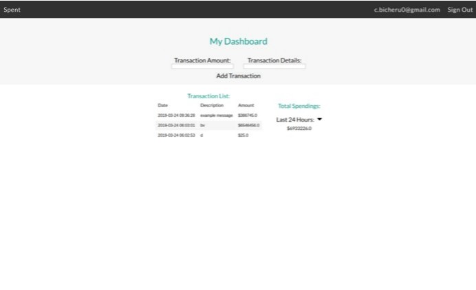

COV-AID is a web application that helps doctors diagnose COVID-19 in their patients via machine learning and send diagnostic data to them in a streamlined way.
User sign in with their Google/email account via Firebase. After a doctor logs in, they can upload an image of a patient's chest x-ray and send it to the Node.js
backend server, where a Keras ML model analyzes it and checks if the patient is tested positive or negative. This data then gets send to the patient, who can access
it via their own account, and is stored on Firebase Firestore. This project got an honourable mention for the Google Cloud Prize.
Hacks/Projects
Project Highlight (WinHacks 2020) - COV-AID
COV-AID is a web application that greatly improves the process of receiving financial aid during the COVID-19 crisis with blockchain technology.
After a user logs in with Metamask, they can submit an image of their government ID, which is analyzed with Google Cloud's Vision API and a Javascript algorithm,
and the output is sent to an express.js and MongoDB backend server through IPFS to determine if the user is eligible for financial aid. If eligible, Metamask and
our smart contracts will prompt the transaction in the blockchain, making the process very secure and efficient. Our project won WinHacks' Most Innovative Hack
against COVID-19 Award ($1000 CAD prize).
ETHDenver 2020 - TornadoCatch
TornadoCatch is a DApp that raises awareness for network-level privacy issues on Ethereum. It uses a Node.js
catcher server to obtain data - wifi data through tshark and
on-chain data via web3.js - and matches these activities to allow for the de-anonymization of DApp users; our app
specifically de-anonymizes users of the cryptocurrency trading tool Tornado.cash.
This data is then saved on a JSON file and sent to a Chrome extension to display the links of the data (MAC address,
time, hash, URL).
ETHWaterloo 2019 - Blocktalk
Blocktalk is a messaging web application that uses the IPFS protocol to encrypt user messages and store their
hashes in a blockchain.
This is then decrypted and the information is sent through JSON for the frontend to access it. We used Fortmatic's
login API to implement
an authentication process for the app and create an email address for other users to contact. Our project won
Fortmatic's 250 CAD (190 DAI) prize.
Hack The North 2019 - Easymoji
Easymoji is a Tkinter app that uses the webcam to capture a picture of your face and find an emoji that best
suits your facial expression. We used OpenCV for the webcam access and the face capturing, and the API we used to
determine the emotions is Microsoft Azure's Face API.
JAMHacks 3 - OfflineAssist
At JAMHacks 3, our team of 4 created OfflineAssist, an offline Google-services provider, with the main service
being Google Assistant. Our entire program is run using a Linode server, and the user sends an SMS to a Twilio
number, which sends and receives requests from the Google APIs. Our team won 2nd place.
Summer Project - Bibyou
Using Firebase Authentication, Google App Engine, and Cloud Datastore, Bibyou allows you to track the sources for all of your assignments and can help you automatically cite
sources in MLA, APA, or Chicago 17th Edition. By a click of a button, you can also edit the sources yourself or
copy the sources to your clipboard.
StarterHacks - Byte-Mail
At StarterHacks 2019, our team of 5 created a secure mailing platform. It
allows the sender's email to be encrypted using a blockchain-inspired algorithm and sent anonymously to the
receiver, without anyone being able to hack into the message and figure out its sender or recipient.
CS Club Project - Orderly Lifestyle
Our final project for our school's CS Club is Orderly Lifestyle, a modernized to-do list.
All
the tasks are neatly organized one on-top of each other and you can customize each task to include extra
information. You can delete a task by simply clicking the circle icon on the left.
MasseyHacks V - Spent
At MasseyHacks V, our team of 4 created a web application called Spent. This Firebase app allows you to track
your expenses over a specific time period (e.g. 1 week, 1 month, etc.) and visualize how much you went over/below
your budget.

JAMHacks 2 - Kinetic Alpha
JAMHacks 2 was my first ever hackathon, which was hosted by my own high school. Our team of
4 created a new tab extension which provides a variety of uses, including the date, links to educational
services, and a Google Search Bar. The changing backgrounds always supply a fresh look for the new tab.
Stay tuned for more projects!
Awards
Year and Grade
Name
Description
2020 - Grade 11
WinHacks 2020
Won Most Innovative Hack against COVID-19 Award ($1000 prize).
2020 - Grade 11
Fermat Math Contest
Won Distinction Award (top 25%) and made honour rolls (Group II).
2018 and 2019 - Grade 10 and 11
Canadian Open Mathematics Challenge
Made honour roll for Southwestern Ontario.
2019 - Grade 11
ETHWaterloo 2019
Won Fortmatic's 3rd place API prize of 250 CAD (190 DAI).
2019 - Grade 10
JAMHacks 3
Won 2nd place - prize includes $250 in Indico API credits and a Maple license.
2019 - Grade 10
ECOO-CS Regionals
Won 3rd place and earned a spot to finals at York University.
2019 - Grade 10
ECOO-CS Boardwide
Earned top 4 in WRDSB region (4th) and spot to regionals at Western University.
2018 and 2019 - Grade 9 and 10
Euclid Math Contest
Won Distinction Award (top 25%).
2018 - Grade 10
Nine Chapters on the Mathematical Art Contest
Won Bronze Award (3rd highest score).
2018 - Grade 9
Fryer Math Contest
Won Distinction Award (top 25%), made honour rolls (Group IV), and earned School Champion Award.
2018 - Grade 9
Pascal Math Contest
Won Distinction Award (top 25%) and made honour rolls (Group IV).
2017 - Grade 9
Canadian Intermediate Mathematics Contest
Won Distinction Award (top 25%) and made honour rolls (Group V).
2016-2017 - Grade 8
Polar Expressions Poem and Short Story Contests
Earned Top 25% national for grade and got poem and short story published on a book.
2016 and 2017 - Grade 7 and 8
Gauss Math Contest
Won Distinction Award (top 25%).
2015 - Grade 6
Gauss Math Contest
Earned a perfect score, spot on honour rolls, and Distinction Award (top 25%).